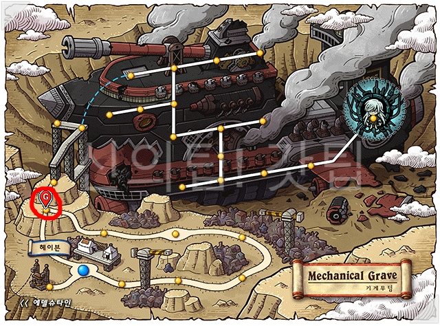

- Lv 10 - 35
골드비치 : 해변가 풀숲 1/2
엘로딘 : 깊어지는 숲 1/2 - 유저끼리 몹을 공유하지 않기 때문에 한맵에서 여러명이 사냥이 가능한 곳입니다.
전직을 하지말고 35레벨까지 쭉 업을 하시면 됩니다. - Lv 35 - 46
불타버린땅 : 와일드보어의 땅 - 와일드보어와 겁먹은 와일드 보어가 나오는데,
몬스터의 레벨이 55라 팁에서 본듯이 캐릭터와 몬스터 레벨차이가 20을 초과하면 경험치가 감소합니다.
그래서 이전 사냥터에서 꼭 35를 찍고와야됩니다. - Lv 46 - 51
조용한 습지 - 이곳은 인기가 정말 많은곳이라 자리가 없을수도 있습니다.
자리가 정 없으면 옆 사냥터인 축축한 습지로 가셔서 사냥해도 좋습니다. - Lv 51 - 61
스카이로드 : 하늘계단1 - 이곳도 인기가 엄청 많은곳입니다.
여기서 60을 찍고 3차를 한후, 바로 노말자쿰을 잡아주시면 1업을 바로 합니다. - Lv 61 - 70
엘나스산맥 : 얼음골짜기 2 - 몬스터들 젠도 빠르고 지형도 좋아서 금방 레벨업이 가능합니다.
- Lv 70 - 75
선셋로드 : 사헬지대 2 - c-2를 가기전에 잠시 들리는 사냥터로 맵이 일자라서 빠르게 사냥하고 c-2로 넘어가시면 됩니다.
- Lv 75 - 80
관계자외 출입금지 - 몬스터들도 많고 2층구간도 낮아서 사냥이 아주 편합니다.
자리를 바꾸는게 귀찮으시면 여기서 87까지 찍어도 상관은 없습니다. - Lv 80 - 87
엘린 숲 : 페어리의 숲1 - 버닝이 높은곳을 찾아서 사냥을 해주시면 됩니다.
- Lv 87 - 100
미나르숲 : 하늘둥지2 - 여기서부터 스타포스 사냥터입니다.
스타포스 사냥터부터는 폭업이 가능합니다. - Lv 100 - 120
꼬여버린 시간 - 뒤틀린 시간의 길 <4>에서 포탈을 타고 들어갈수있는 히든리스트 사냥터입니다.
제일 폭업이 잘되는 사냥터라고 생각합니다. - 120 - 135
폐광 : 시련의 동굴2 - 경험치도 잘 주고 몬스터들도 많아서 업이 빠른 사냥터인데
한가지 단점은 중간에 용암이 있어서 살짝 걸리적거리는 느낌이 듭니다.
자리가 없다면 바로 옆인 폐광 : 시련의 동굴3에 가서 사냥해도 됩니다. - Lv 135 - 160
커닝타워 : 2층카페<4> - 이곳도 거의 국민 사냥터라 사람이 엄청 많습니다.
135레벨에 원킬이 안난다면 140까지 폐광에 있다가 와도 상관이 없습니다. - Lv 160 - 180
UFO 내부 : 지구방위 본부 H01 - 165부터 입장이 가능한 곳이지만 텔레포트 월드맵을 사용하시면 160레벨에도 바로 올수 있습니다.
- Lv180 - 190
황혼의 페리온 : 버려진 발굴지역 2, 4 - 두곳다 좋은 사냥터라고 생각합니다.
자리 빈곳으로 가서 사냥하시면 됩니다. - Lv 190 - 195
기계무덤 : 기계무덤 언덕4 - 190을 찍었다면 외눈이의 편지를 받아주시고, 헤이븐으로 와서 퀘스트를 깨줍니다.
'구해줘서 고마워' 퀘스트까지 클리어 해주면 약 5분가량만에 약 3억의 경험치를 받을수 있습니다.
퀘스트를 다 꺠고 기계무덤언덕4에서 사냥해주시면 됩니다. - Lv 195 - 200
스카이라인 : 스카이라인 올라가는길

- 여기서 30~40분 정도만 상하차 받으면서 사냥하시면 200이 됩니다.
기계무덤언덕4에서 200까지 마무리해도 되지만 상하차를 받으면서 사냥하시는게 훨씬 편합니다.
고자본 사냥터
준비물


각종 경험치 도핑 아이템, 고자본에게 어울리는 텔레포트 월드맵
고자본은 걸어다는게 사치입니다. 텔레포트 월드맵 여러개 준비해주세요